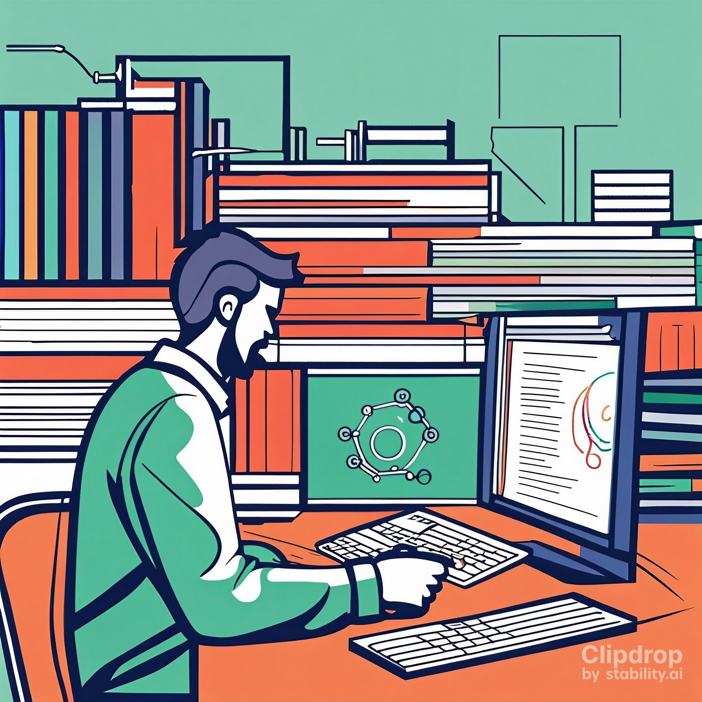
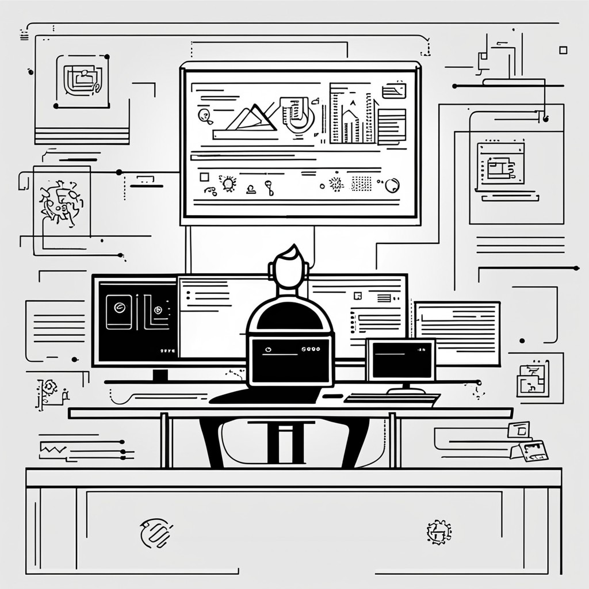

Objetivos
-
Objetivos Real Decreto 686/2010
-
i) Utilizar lenguajes de marcas y estándares web, asumiendo el manual de estilo, para desarrollar interfaces en aplicaciones web.
-
j) Emplear herramientas y lenguajes específicos, siguiendo las especificaciones, para desarrollar componentes multimedia.
-
Objetivos de la unidad
-
Entender el concepto de framework CSS
-
Aplicar técnicas de layout responsive y componentes CSS del framework
-
Construir webs usando conjuntamente frameworks y técnicas de desarrollo web


Resultados
Aprendizaje
-
Real Decreto 686/2010
-
RA2 Crea interfaces Web homogéneos definiendo y aplicando estilos.
-
RA5 (Parcial) Desarrolla interfaces Web accesibles, analizando las pautas establecidas y aplicando técnicas de verificación
-
RA6 (Parcial) Desarrolla interfaces Web amigables analizando y aplicando las pautas de usabilidad establecidas

Metodología
Recursos Didácticos
Tutorías
Tutorías Colectivas
Tutorías Individuales